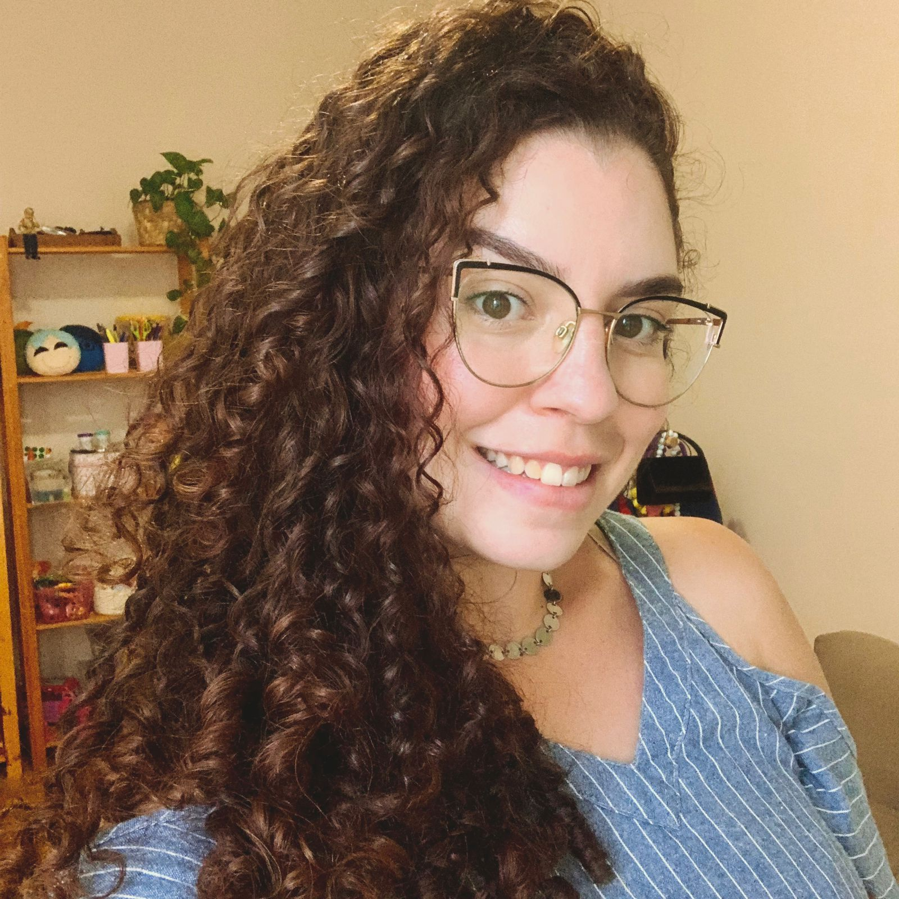

01
Atendimento online
Para que a análise possa acontecer de onde você estiver, com privacidade e presença.
Psicoterapia online e presencial · Juiz de Fora, MG
Uma escuta psicanalítica para o que insiste, silencia, se repete e ainda busca palavras.
Iniciar uma conversa
Sobre mim
Sou Laura Ribeiro, psicóloga inscrita no CRP-MG sob o nº 04/74943. Formada em Psicologia pela Faculdade Machado Sobrinho, faço parte do Corpo Freudiano de Juiz de Fora, Minas Gerais.
Minha prática tem abordagem psicanalítica. No encontro clínico, busco acompanhar cada pessoa com ética, cuidado e atenção ao modo único como sua história se apresenta.
Conheça o atendimentoUma pausa para a palavra
“Liberdade é pouco. O que desejo ainda não tem nome.”Clarice Lispector, Perto do coração selvagem
A clínica
Na análise, não há um caminho pronto. Há uma fala que se constrói, entre lembranças, perguntas, silêncios e aquilo que ainda não se sabe dizer.
01
Para que a análise possa acontecer de onde você estiver, com privacidade e presença.
02
Em Juiz de Fora, MG, em um espaço reservado para acolher a sua fala.
Fragmento de escuta
Dúvidas frequentes
Podemos conversar sobre outras questões no primeiro contato.
É um primeiro encontro para conversarmos sobre o que levou você a buscar análise, além de alinharmos horários, valores e os detalhes do atendimento.
As sessões geralmente duram entre 45 e 60 minutos, respeitando a fluidez de cada encontro.
Sim. Todo o processo é conduzido conforme os princípios éticos da profissão.
Valores e formas de pagamento são conversados no primeiro encontro.